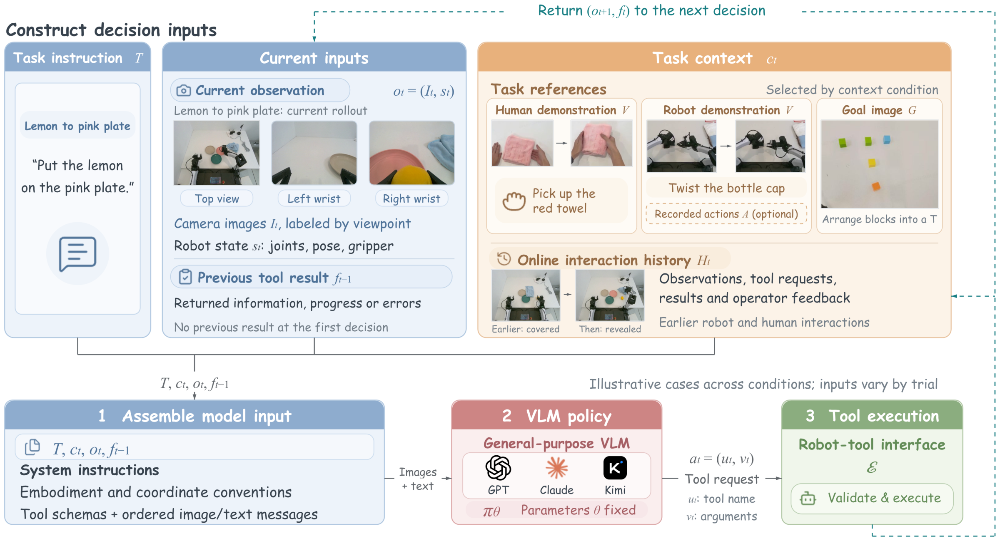

GPTPOLICY
MOVE OR SCROLL TO ENTER
Can a fixed general-purpose VLM learn from demonstrations, examples, and interaction feedback and turn it into executable, verifiable behavior from a new initial state?

Overview
Enabling robots to adapt to unfamiliar environments as readily as humans remains a moonshot goal of embodied AI. No finite collection of demonstrations can cover every task and situation a robot will encounter, making the ability to learn from context at deployment essential for generalization. Such in-context learning (ICL), however, remains largely beyond the reach of existing robotic policies. The broad agentic capabilities of commercial vision-language models (VLMs), such as GPT-6 Astra, raise a compelling question: can these models learn from demonstrations, examples, and interaction feedback, then translate that information into executable and verifiable robot behavior from a new initial state without gradient updates or persistent changes to task-specific parameters?
We introduce GPT-Policy, a general-agent framework for in-context robot learning. GPT-Policy integrates a context compiler that preserves task-relevant visual transitions, a VLM that proposes robot-tool actions, and a constrained controller that verifies and executes each action and reports its outcome. We evaluate its reliability and limitations through task success and efficiency metrics, matched comparisons across models, and controlled context ablations. In real-robot trials, human video demonstrations improve task completion even without robot action labels, while aligned action references yield further gains on contact-sensitive tasks. These findings position GPT-Policy as a step toward robot adaptation through in-context learning, providing an empirical foundation for translating the general-purpose capabilities of VLMs into physical behavior and clarifying the challenges that must be overcome for reliable deployment.
How much robotic in-context learning is already accessible through general VLMs that were not trained as dedicated robot policies?
Context
Robotic ICL adapts behavior using demonstrations, examples, or interaction experience at test time, without gradient updates or persistent task-specific parameter changes. Each context family supplies information that the current instruction and observation may omit.
Procedure
01Ordered visual keyframes specify how a person carries out a task, without expert robot actions.
Fine contact
02Aligned visual evidence and optional action references support contact-rich manipulation.
Goal state
03A reference image gives the final arrangement and spatial relations without prescribing a sequence.
Memory
04Earlier observations, actions, failures, and outcomes remain available for exploration and recovery.
Coordination
05Pointing, turn history, and live feedback can change target selection and action timing online.
Method
GPT-Policy connects a general-purpose VLM to robot tools through a shared context-to-action interface. Embodiment-specific adapters translate tool requests into executable commands. Model parameters remain fixed; updated observations and execution or rejection feedback inform each subsequent decision.

Combine task references, current views, state, and retained interaction history.
Interleave text and images with stable instructions, constraints, and tool schemas.
A fixed general VLM chooses one structured robot-tool request.
The Cartesian adapter samples poses, checks inverse-kinematics residuals, times joint references, and returns execution or rejection feedback.
Experiments
| Task | Context condition | Success | Decisions | Time (min) |
|---|---|---|---|---|
| Pick Red Towel | None | 0 / 3 | 96.3 | 24.6 |
| Pick Red Towel | Human video | 2 / 3 | 76.7 | 18.9 |
| Pick Up Notebook | None | 0 / 3 | 94.0 | 24.6 |
| Pick Up Notebook | Human video | 2 / 3 | 66.7 | 16.1 |
| Unscrew Bottle Cap | None | 0 / 3 | 71.0 | 16.1 |
| Unscrew Bottle Cap | Robot video | 2 / 3 | 74.3 | 15.2 |
| Unscrew Bottle Cap | Robot video + action | 3 / 3 | 54.7 | 17.9 |
| Remove and Reinsert Plug | None | 0 / 3 | 24.0 | 5.3 |
| Remove and Reinsert Plug | Robot video | 0 / 3 | 33.7 | 7.9 |
| Remove and Reinsert Plug | Robot video + action | 2 / 3 | 48.3 | 10.8 |
| Arrange T Shape | Target image | 3 / 3 | 66.7 | 15.8 |
| Arrange Fruit | Target image | 3 / 3 | 49.0 | 12.4 |
| Lemon To Pink Plate | Self history | 3 / 3 | 35.3 | 8.1 |
| Movable Exploration | Self history | 3 / 3 | 40.33 | 25.53 |
| Tic-Tac-Toe | Human-robot interaction | 3 / 3 | 69.7 | 13.6 |
| Pointed Fruit Pickup | Human-robot interaction | 3 / 3 | 67.3 | 15.0 |
GPT-6 Astra on real robots; three trials per condition. Success requires the final scene to satisfy the task-specific geometric and semantic criteria. Decisions and time are averaged over all trials, including failures. Tic-Tac-Toe wins and draws both count as success.
Interactive demos
Human-video and goal-image tasks place the conditioning input beside the corresponding robot rollout. Other tasks retain configuration controls. Long robot runs are accelerated as labeled; source demonstrations remain at real time.
Controlled comparison
Self-history comparison
Baseline comparison
What the current evidence shows
Human videos raise towel and notebook pickup success from 0/3 to 2/3 without robot action labels. Aligned action references further improve bottle opening and plug reinsertion, but do not consistently reduce execution costs.
Context can improve task understanding, planning, and adaptation. Precise pose generation, contact execution, outcome verification, and physical safety remain separate challenges.
VLM agents can generate useful actions, but decisions can be slow and expensive. Specialized VLA or world-action models may support fast low-level control while VLM agents focus on reasoning, adaptation, and replanning.
Discussion
In individual red-towel runs, human video raises GPT-6 Astra task progress from 55% to 100%, with approximately 35.6% shorter run time and 58.9% lower estimated token usage. Fable 5.1 and Kimi K3 reach 30% and 20% progress. These examples do not establish a reliable model ranking: task progress is distinct from success rate, which is 2/3 for GPT-6 Astra with human video.
The evidence covers small task series under selected platforms, models, and context conditions. Incomplete ablations and unobserved pretraining limit causal and novel-skill claims. Context quality, observation–action alignment, execution latency, and human intervention remain constraints. Observed inter-arm collisions show that existing safeguards alone are insufficient for safe autonomous deployment.
Citation
@article{anonymous2027incontext,
title = {In-Context Robot Learning with VLM Agents},
author = {Anonymous Authors},
year = {2027},
journal = {ICLR submission}
}
{kind=link}